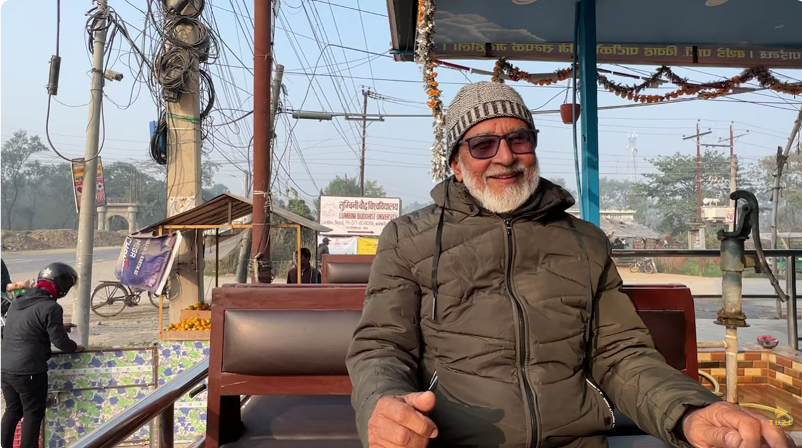

Real Story · 中文
生日那天，我在路边听见一个很有力量的声音。
11/12/2023，是我的生日。 那一天，我从 Nepal 的 Lumbini car park 开往 India 的 Lucknow。 早上，我在路边停下来，想喝一点 light chai，简单吃个早餐。
在 India、Nepal，后来甚至 Pakistan 和很多 Iran 路段，coffee 不是那么容易遇见。 当然这不是代表全部地区，只是我一路用 Google Map 走 best route 时，常常遇到的是 chai。 所以路边一杯 chai，就成了我旅程里的日常。
我正在享受早餐的时候，突然听到一位老人说话。 他的声音很 deep，很 strong，而且带着一种 English accent。 那种声音一出来，我马上注意到。
我主动走过去和他聊天。 他叫 Abdul Azizul Khan，是一位 retired English teacher。 后来我得到他的 permission，把我们的 conversation 做成 YouTube video。
他告诉我很多关于 Nepal 的 dilemma。 教育、农业、基础建设、政治、年轻人的未来，还有国家要往前走时会遇到的困难。 他不是用很激动的方式说，而是用一位老师、一位经历过很多的人那种深沉的语气慢慢讲。
这不是普通的 roadside breakfast。 这是我生日那天，路边送给我的一堂课。
我原本只是停下来喝 chai。 结果遇见了一位老师，也听见了一个国家内部的担忧、希望和现实。
Related Video · Tuzi Vlogs Archive
Abdul Azizul Khan: a retired teacher’s view of Nepal.
This video preserves Tuzi’s conversation with Abdul Azizul Khan, a retired English teacher in Lumbini. He spoke about education, agriculture, infrastructure, politics, and the hopes and struggles of Nepal.
English Memory Summary
A birthday chai stop became a lesson.
On 11/12/2023, Tuzi’s birthday, she drove from the Lumbini car park in Nepal toward Lucknow in India. In the morning, she stopped by the roadside for a light chai and breakfast.
While sitting there, she heard an elderly man speaking with a deep, strong voice and an English accent. Curious, she approached him and started a conversation.
He was Abdul Azizul Khan, a retired English teacher. With his permission, Tuzi recorded an interview and later posted it on YouTube.
Abdul spoke about Nepal’s dilemmas: education, agriculture during dry seasons, infrastructure, politics, and the hopes for a better future. What began as a roadside chai stop became a birthday encounter with a teacher’s perspective on the country.
Heart Statement
有些生日礼物，不是包好的。
那天我没有蛋糕，也没有特别安排。 我只是在路边停下来喝一杯 chai。
可是路给我安排了一位老师。 他用很深、很稳的声音，让我听见 Nepal 的另一层现实。
I stopped for chai on my birthday. The road gave me a teacher.